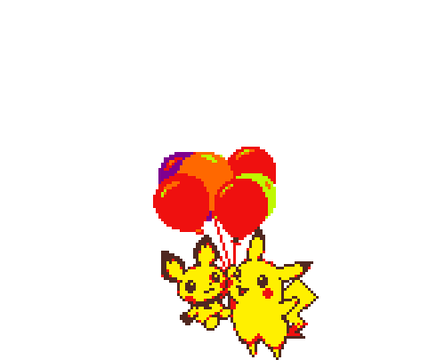
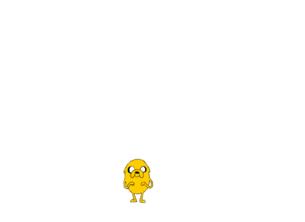
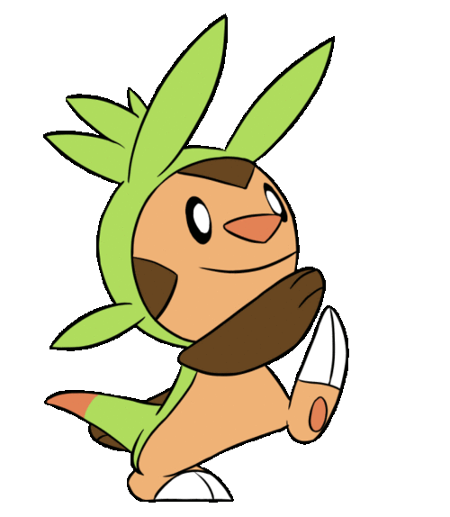
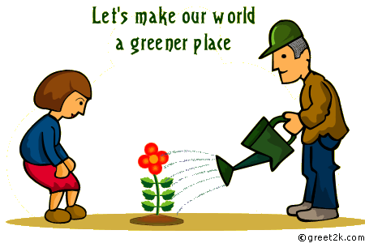
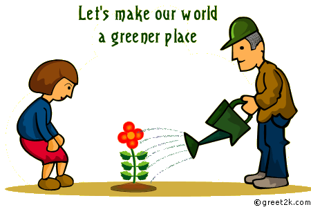

SAVING THE WORLD ONE TREE AT A TIME
SAVING THE WORLD ONE TREE AT A TIME

WHY DO WE NEED TO PROTECT OUR FOREST?

 LOSS OF BIODIVERSITY
LOSS OF BIODIVERSITY
 Innocent animals live in the forest!
Innocent animals live in the forest!

We have valuable resources hidden in the forest! 


We need more trees to synthesize oxygen for us to breathe!

The earliest record of Deforestation by humans goes as far back as 9000 14C yr BP by Pre-Pottery neolithic B people. Of course since then the percentages of forest covering the Earth has changed. Today only 30% of our Earth's land is covered with forest. Deforestation is happening all over the world at an alarming rate, according to wildlife .org, 46-58 million square miles of forest are lost each year. Between 1990 and 2015 the world lost some 129 million hectares of forest and Between 2000 and 2010, 13 million hectares of forest- the size of Greece- were lost each year due to deforestation and forest degradation -says wwf.panda.org. The importance of forest conservation is lost to many people, so here are just a few of the many reasons why forest conservation is important.
 Air Pollution
Air Pollution
As well as providing us with oxygen, trees can even clean out certain pollutants in the air. By using phytoremediation, forests can either remove the toxins or make them less dangerous. How the trees make is happen is by drawing in the air pollutants through the stoma of their leaves and absorbing them with normal air components- says urbanforestnetwork.org. Some of these air pollutants are, sulfur dioxide, ozone, nitrogen oxides, and particulates.Forest also play a role in managing clouds, wind, humidity, air quality, and rainfall. Another cool thing forest can do is influence regional weather patterns and create their own microclimates.
Biodiversity
Preserving forest life is not only important to us but also to all the different species that inhabit the forest as well. What has become known as Empty Forest Syndrome is unfortunately becoming common around the world. What this means is that although the forest contain trees, very few animals live in it due to overexploitation, uncontrolled hunting. Not only are the animal affected but the trees and local natives as well. Forests support 80% of the world's terrestrial biodiversity that include plants, animals, fungi, and bacteria. As well as supporting countless species, forests also support 1.6 billion human lives, according to ww.mnn.com. “Some 300 million people live in forests worldwide, including an estimated 60 million indigenous people whose survival depends almost entirely on natives woods”. When forest disappear so do the species living in it, and the local people lose their source of food.

 OUR MISSION
OUR MISSION
It's up to you! Yes, YOU! 
To help the human species save the forest and become the hero!

 Play our interactive game and learn how we can change the world for good!
Play our interactive game and learn how we can change the world for good!
HOW CAN YOU HELP? 
 Go out and join the forestry community!

 Volunteer to plant more trees and clean the surroundings!

Volunteer to plant more trees and clean the surroundings!

Go visit the local forest and investigate the land!

Threats To The Forest and How You Can Help
The importance of forest conservation is something we all need to bring awareness to, ignoring a problem won't make it go away. Various threats to the forest include illegal logging, fires, fuelwood harvesting, mining, small and large agriculture, and infrastructure projects. There are many ways to help prevent these threats and conserve the forest and here's what you can do to lend a hand. Of course recycling and using less paper would be a big help but so would, surprisingly, eating less beef. Reason being that forests are cleared to make way for cattle ranches. Another way to help conserve forests is by donating to the cause, so here are some organizations you can donate to.
 Check out a glimpse of the game and give it a try!
Check out a glimpse of the game and give it a try!